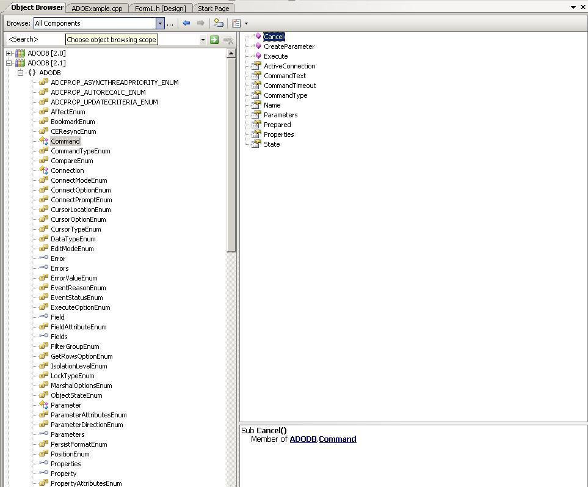

Managing database operations using ADO and C++: Part 2: Introduction to ADOby Patrick MancierADO ObjectsThis is a brief synopsis of the various objects that will be used in the C++ ADO manager class and is not an exhaustive description of what each object is.ADO consists of a series of objects that are used to manage interfacing to an SQL server. In C++ these objects need to be instantiated using a smart pointer and then set up correctly in order to perform database operations. Generally ADO is abstracted from the particular syntax issues of various SQL servers. It operates via a driver supplied by a specific SQL server provider. Each provider must supply the driver necessary for ADO to interface to the server properly and handle the various interfaces that ADO operates on. For instance, the MS-SQL server uses a driver called 'SQL Native Client'. In this way, with only a few exceptions, only one piece of code needs to be written in order to interface properly with various SQL servers. ConnectionThe ADO connection object handles the actual persistent connection to the SQL server. The main thing to keep in mind is to properly set up the connection string. The connection string consists of a series of key value pairs. Generally the connection string tells ADO the name of the SQL server computer to connect to, the driver to use as a client to connect to the server, the database to use and any authentication information and any other various miscellaneous values that are necessary to properly connect to the SQL server.CommandThis ADO object is used to generate a specific command to send to the SQL server. For example, creating a command object, one can either call a SQL statement directly or could call a specific procedure. This object is very important because properly configuring this object is what makes it possible to perform a specific ADO operation.ParameterThe parameter object is used in passing parameters to either a stored procedure or an SQL command. It is important to generate this list of parameters correctly and in order before calling a procedure or running query. Each parameter that is defined to ADO must have a type, a size and to indicate whether or not the parameter is an input or an output parameter.RecordsetRecordset is the heart of ADO in that it is the primary mechanism for retrieving and storing data into a database. The recordset object can be used to scroll through a set of records in any direction, from any point. It can also be used to sort the recordset before traversing it using a filter property.Overview of the ADO APITo get an overview of the available interfaces and the class members ADO consists of, open up Visual Studio and open up the "C:\Program Files\Common Files\System\ado\msado21.tbl" file. Visual Studio will open this up as an object browser and open up the ADODB [2.1] tree as follows: As you can see, you can go ahead and navigate all the objects that exist in ADO. If you select the 'Command' class for example you can browse through the properties and the methods available. Doing this should give one a rough idea of what is available in ADO by simply clicking through the object browser. C++ code necessary to access ADO APITo set up ADO for use in the compiler, the importing of a typelib that contains the ADO manager class calls is necessary. ADO is a series of COM interfaces and in C++ it could get rather complex to access all these various interfaces using the COM API. Below is a method that helps streamline some of this.Somewhere in one of your main modules you must have the following line:
#import "c:\program files\common files\system\ado\msado15.dll" rename ("EOF","adoEOF") no_namespace
To access the ADO objects in C++, probably the easiest way is to use what are called 'smart pointers'. With COM smart pointers the compiler handles all the things like interface instantiation, memory management etc all the programmer has to do is create an instance to the proper interface and start using the pointer as if it were any other instantiated class. The programmer does not need to actually delete the object, when it falls out of scope that is handled by the program.
Below is a piece of code that is typical of Microsoft and how to instantiate a smart pointer:
HRESULT _hr =sp.CreateInstance( __uuidof( riid ) );
if (FAILED(_hr))
{
_com_issue_error(_hr);
}
The riid is a GUID to a specific interface and sp is the instantiation of the smart pointer. The hr variable is the result of the call to the CreateInstance API and should be checked to see if there are any errors in creating the interface pointer. Typical errors would include things like the interface does not exist, memory allocation failure, etc. _com_issue_error is a Microsoft call that throws an exception to the system with the error that is passed to it. You don't necessarily need to throw an exception for things like this, but in production code it is a good idea.ADO uses COM as its framework for interfacing to the application. You must instantiate COM before performing any ADO operations. Below is an example of how to get COM going and instantiate the four main ADO interface objects in the application. Notice the use of the underscore and the letters Ptr after the name of the ADO object when declaring the object variable. This is the syntax of a smart pointer that COM uses in order to generate the underlying code that actually creates and initializes the interface object and de-allocates when the object is out of scope to the smart pointer in question.
#import "c:\program files\common files\system\ado\msado15.dll" rename ("EOF","adoEOF") no_namespace
int main(int argc, char *argv[])
{
_ConnectionPtr pConnection;
_CommandPtr pCommand;
_ParameterPtr pParameter;
_RecordsetPtr pRecordset;
int iErrorCode;
HRESULT hr;
// Initialize COM
if(FAILED(hr = CoInitialize(NULL)))
{
goto done_err;
}
// Intialize the ADO Connection object
if(FAILED(hr = pConnection.CreateInstance(__uuidof(Connection))))
{
goto done_err;
}
// Intialize the ADO Command object
if(FAILED(hr = pCommand.CreateInstance(__uuidof(Command))))
{
goto done_err;
}
// Intialize the ADO Parameter object
if(FAILED(hr = pParameter.CreateInstance(__uuidof(Parameter))))
{
goto done_err;
}
// Intialize the ADO RecordSet object
if(FAILED(hr = pRecordset.CreateInstance(__uuidof(Recordset))))
{
goto done_err;
}
// Uninitialize COM
CoUninitialize();
// Everything worked out, report an OK
iErrorCode = 0;
done:
return iErrorCode;
done_err:
// TODO: Cleanup
iErrorCode = (int)hr;
goto done;
}
Interfacing ADO to various database platformsIn this article, the MS-SQL server is used in the examples. However, as mentioned before ADO is not limited to just one type of SQL server. If the correct driver is installed on your computer, which a provider has made to properly use ADO, ADO can be used to interface to this platform.The main difference in platforms is the connection string that is used in the Connection object. ADO has five standard keys that it looks at in processing a connection string and all other key value pairs are passed directly to the provider driver. This information on the Connection String Property of the Connection object can be found in the documentation for ADO in the MSDN library. Providers can use their own syntax in this connection string so it is up to the user of this platform to research and figure out what the connection string should look like. Once this syntax is figured out, the rest of the code is for the most part the same. With the right connection string one can even access XML or CSV files as if they were a database. Being able to do this requires that ActiveX Data Objects library be installed. In order to view the various connection strings, go to your favorite search engine and type "ADO connection strings" to get a list of web pages on how connection strings to other database platforms are structured. The following string should theoretically work if you have installed SQLExpress on your system locally and have installed the ADOTest database installation script. If you have a different database you need to attach to or if your server is on a remote machine, you will obviously need to change those values. DRIVER=SQL Native Client;SERVER=.\SQLExpress;Trusted_Connection=Yes;Initial Catalog=ADOTest; Building a connection stringThere is a way to 'build' your own connection string if you have your SQL server running and you can get to it locally or remotely.Continue to part 3 of the tutorial Back to part 1 of the tutorial Back to the ADO tutorial index |